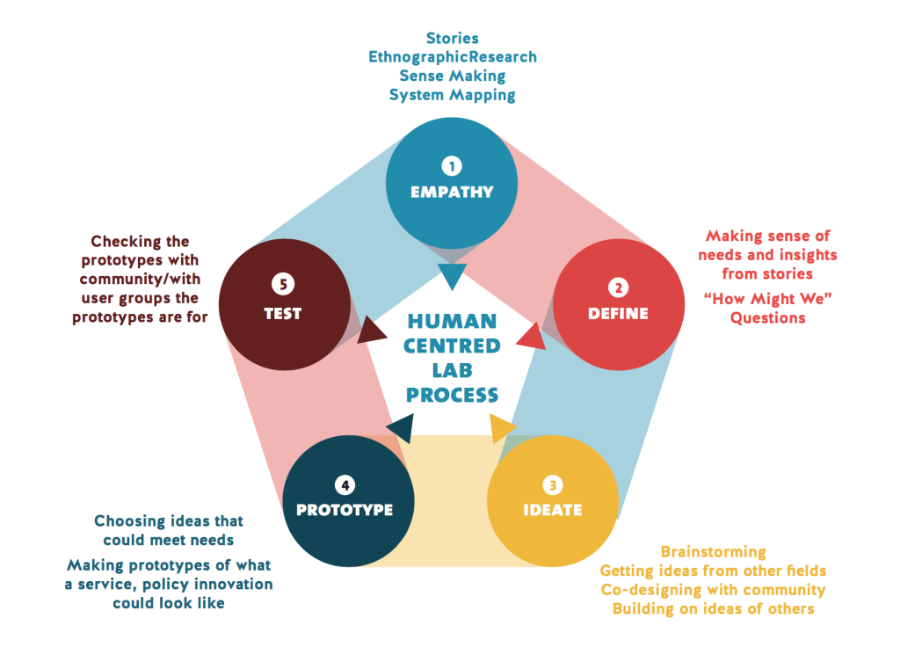
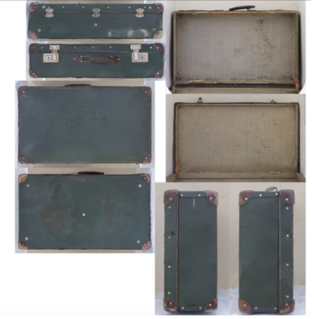
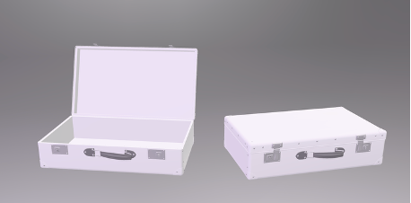

This week’s course focuses on the core concepts of Human-Computer Interaction (HCI) and User Experience (UX), with particular emphasis on the principle of “human-centered design” that must be adhered to in the design of interactive systems. This is not only a deepened guidance for current project practices but also a shift in design thinking: moving from technology-driven to starting from user perception and behaviour.

Tamarack Institute (n.d.) Human Centered Design process diagram [Online image]. Available at: the Tamarack Institute website (Accessed: 5 March 2025)
1. User Priority:
The lecturer first emphasized that in design, relying solely on technical complexity or advancement is far from sufficient. Even if a product has perfect functionality, it will struggle to gain user recognition if its interface is unfriendly or operations are unintuitive. Therefore, user needs, feelings, and usage scenarios should permeate every stage of the design process from initial concept development to prototype design and final delivery. No matter how perfect the technology is, it must ultimately serve real people.
2. Tools and Methods:
The course introduces several key design tools, such as:
- User Journey
- Task Model
- Scenario Building
These methods help us break free from the limitations of technical logic and truly immerse ourselves in user contexts, designing from a “user perspective”. For example, an interactive stock trading system should not only display data but also alleviate users’ anxiety, an AR public experience project should consider the audience’s “sense of gaze” and social pressure.
3. Visual Thinking:
The course encourages us to ground our ideas through User Flow Sketches and Touchpoint Mapping. This not only facilitates team collaboration and communication but also exposes system logic issues in the early stages, avoiding rework later. Additionally, the lecturer mentioned integrating Reflective Design and Critical Design to expand the dialogue between technology and culture.
4. Task:
At the end of this week’s course, we undertook a creative and challenging design task: rapid prototyping around the concept of “Box”. This exercise not only reinforced our understanding of user interaction and interface design, but also pushed us to ground abstract design concepts into narrative experience prototypes with imagination within a limited time.
Design idea
Our group took inspiration from the “magical suitcase” in Fantastic Beasts and Where to Find Them and conceived an interactive box concept called “Creature Case”. The box appears ordinary on the surface, but it hides magic inside. When users open it, a magical creature will be randomly released, displayed in front of them in the form of VR.
Inspirations


Core Interactive Design Considerations
During the design process, we explored interactive behaviours and user experience from multiple dimensions:
- Physical Interaction: Simulate the feel of traditional mechanisms by using VR controllers to open the box, replicating tangible manipulation.
- Dynamic Feedback: Incorporate light effects, smoke, and magical particle animations to enhance the “ritual sense” and surprise during the opening process.
- Interface Design: Beyond physical components, envision voice control to diversify and simplify interaction methods.
- User Expectation: Strengthen anticipation for each use through randomness, while keeping the learning curve minimal to avoid complexity.
5. Conclusion:
This lesson has made me realize that design is not about showcasing how powerful technology is, but about making technology truly “usable”, “easy to use”, and building an emotional connection through its application. A truly excellent design serves as a bridge between humans and technology, it responds to current needs while respecting the complexity of human nature.